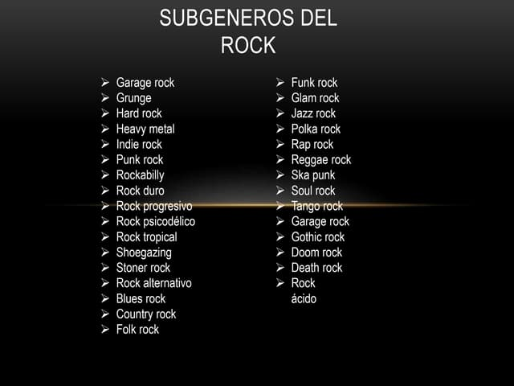

Los subgéneros del Rock son numerosísimos. Sin embargo, una lista de los principales incluiría: Surf Rock. Nacido en EE.UU, toma como tema la vida playera. Folk Rock. Música fusión del blues, rock y la música folk. Rock psicodélico. Variante experimental y próxima a la experiencia de las drogas alucinógenas (sobre todo LSD). Blues Rock. Con la guitarra eléctrica en solitario ocupando el lugar principal, combina el Blues y el Rock. Heavy Metal. Apostando por la velocidad y la intensidad de sonidos, es la variante estridente del rock. Rock progresivo. Acercándose al jazz y la música clásica, valoró el aspecto sinfónico y complejo del Rock, incluso aspirando a contenido filosófico-esotérico. Glam Rock. Su nombre viene de “glamour” (glamoroso) y fue un retorno a cierta sencillez frente al rock más complejo, durante los 70 y 80. Punk Rock. Bajo el lema “There is no future” este género asumió la inconformidad y la rabia de los sectores bajos de Reino Unido bajo un mensaje contracultural y violento. Rock Industrial. Empleando sonidos de máquinas y metales, sacados de fábricas, es un Rock del capitalismo: las máquinas, el ruido, la regularidad. Fuente: https://concepto.de/rock/#ixzz80QgNBRQm
